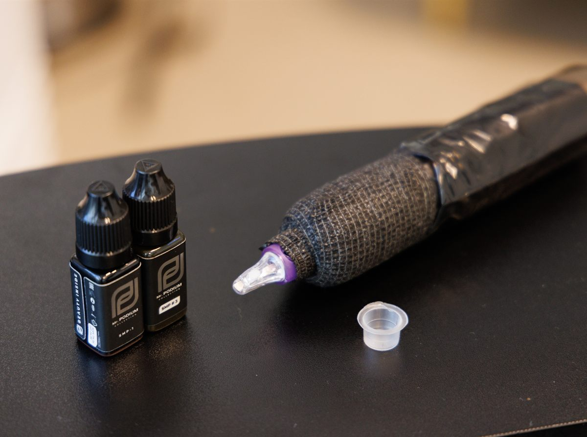
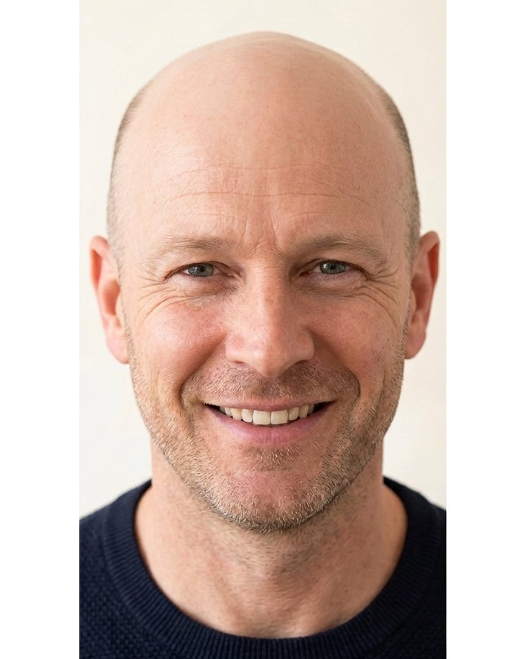
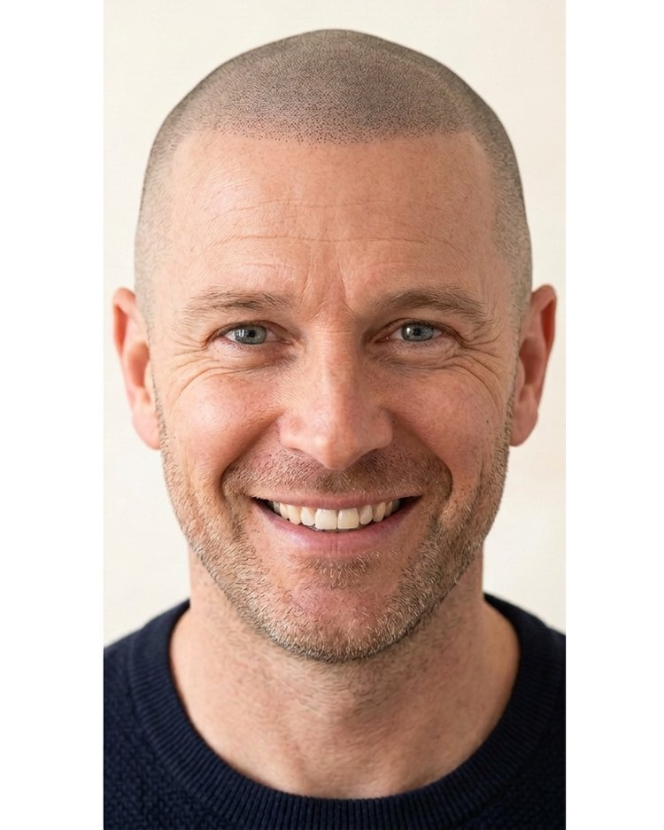
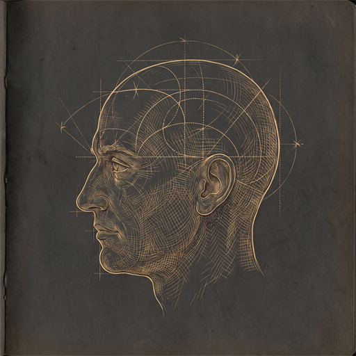
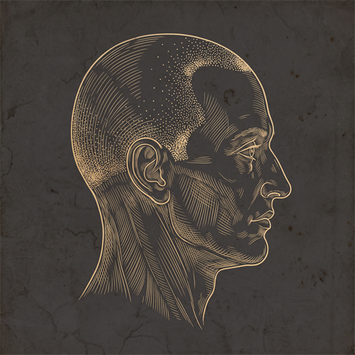
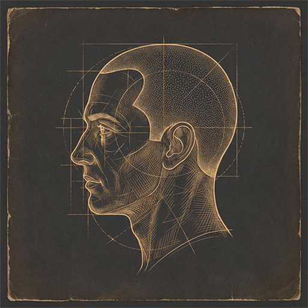
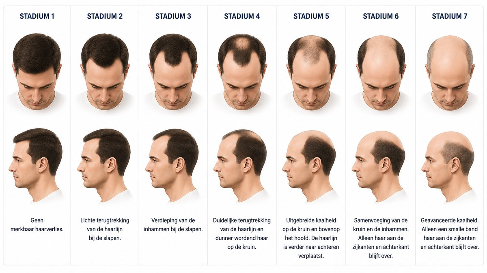

Behandelgids

Scalp micropigmentatie (SMP) is een niet-chirurgische behandeling waarbij duizenden micro-pigmentpuntjes in de hoofdhuid worden aangebracht om de illusie van kortgeschoren haarfollikels te creëren. Het resultaat is een strak gedefinieerde haarlijn en de uitstraling van meer dichtheid, zonder operatie en zonder hersteltijd van betekenis.


Sleep om het verschil in dichtheid te zien
Met gespecialiseerde micro-naalden wordt pigment in de bovenste laag van de hoofdhuid aangebracht. Elk puntje wordt met de hand gepositioneerd om in grootte, richting en diepte op een natuurlijke haarfollikel te lijken. Doordat er met meerdere pigmenttinten en -diepten wordt gewerkt, ontstaat een driedimensionaal effect dat ook van dichtbij overtuigend oogt — in plaats van een vlakke, uniforme schaduw.
SMP wordt toegepast bij een breed scala aan situaties:
Of SMP de juiste keuze is, hangt af van onder meer huidtype, de mate en het patroon van haaruitval en persoonlijke voorkeur. Dit wordt tijdens het consult in kaart gebracht.
Van ontwerp naar volledige dichtheid
Het traject in drie stappen



Dichtheid wordt opgebouwd, niet geforceerd.
Elk traject begint met een persoonlijk consult. Samen wordt gekeken naar de mate van haarverlies, de gewenste dichtheid en een haarlijn die aansluit bij gezichtsvorm, leeftijd en stijl. Geen twee haarlijnen zijn hetzelfde — het ontwerp wordt volledig op maat gemaakt.
De behandeling wordt opgebouwd over meerdere sessies, waarbij per sessie een nieuwe laag pigment en definitie wordt toegevoegd. Deze gelaagde aanpak voorkomt een té donker of onnatuurlijk resultaat en zorgt dat de overgang naar bestaande haargroei geleidelijk verloopt.
Na afloop ontvangt u uitgebreide nazorginstructies. Afhankelijk van huidtype en levensstijl kan een periodieke touch-up na enkele jaren de scherpte en kleurdiepte verfrissen.
De meeste trajecten bestaan uit 2 tot 3 sessies, verspreid over enkele weken. Dit geeft de huid tussentijds rust en maakt het mogelijk om resultaat en dichtheid tussentijds te evalueren voordat de volgende laag wordt toegevoegd.
De prijs volgt uit het aantal zones dat we behandelen: € 600 per zone. Een volledig traject beslaat meestal drie tot vier zones, maar alleen de haarlijn aanzetten kan ook. Welke zones nodig zijn tekenen we samen op tijdens het gratis en vrijblijvende consult, zodat de prijs vaststaat voordat we beginnen. Op de tarievenpagina staat de zone-indeling met een tekening erbij.
De meeste cliënten omschrijven de sensatie als mild en doof, vergelijkbaar met een lichte tatoeage. Wij mogen zelf geen verdovende crème voorschrijven of verstrekken. Wilt u verdoving, dan kunt u die via uw huisarts verkrijgen en meebrengen naar de afspraak; de meeste cliënten hebben het niet nodig.
Met de juiste nazorg blijft SMP jarenlang goed zichtbaar. Pigment kan, net als bij elke vorm van pigmentatie, in de loop der jaren licht vervagen door zonlicht en huidvernieuwing. Een touch-up kan dit eenvoudig verfrissen.
Een haartransplantatie verplaatst eigen haarfollikels en levert echte, groeiende haren op, maar vraagt een operatie, hersteltijd en is niet voor iedereen geschikt — bijvoorbeeld bij onvoldoende donorhaar. SMP is niet-chirurgisch, heeft nauwelijks downtime en creëert de visuele illusie van dichtheid of een geschoren look. De twee technieken worden ook vaak gecombineerd: SMP om transplantatielittekens te camoufleren of om de ogenschijnlijke dichtheid tussen getransplanteerd haar te verhogen. Lees meer in SMP of haartransplantatie? De verschillen op een rij.
Haaruitval verloopt bij iedereen anders. De Norwood-schaal toont de zeven stadia van mannelijke kaalheid — van een lichte terugtrekking van de haarlijn tot vergevorderde kaalheid. MHP biedt in vrijwel elk stadium een natuurlijk ogende oplossing.

Herkent u zichzelf ergens tussen stadium 3 en 7? Micro Haarpigmentatie biedt ook bij vergevorderde haaruitval een natuurlijk ogende, onderhoudsarme oplossing.
Bespreek uw situatieWat cliënten zeggen
Alle beoordelingen op Google →★★★★★
Bij binnenkomst denk je al: wat een fijne plek om te zijn. Daarnaast krijg je goede uitleg over de behandeling en word je echt even in de watten gelegd! :)
Kim van der H. · oktober 2026
★★★★★
Wat een heerlijke behandeling en erg professioneel. En een hele vriendelijke, fijne man
Lucie van den A. · oktober 2026
MHP Centrum is net open in Oisterwijk en ik bouw mijn portfolio op. Daarvoor zoek ik een beperkt aantal modellen voor scalp micropigmentatie: u betaalt 50% van het normale tarief, en ik mag uw resultaat fotograferen en laten zien.
Niet iedere aanmelding komt in aanmerking. Dat beoordeel ik eerlijk tijdens het gratis consult, en komt u niet in aanmerking dan zeg ik dat ook.
Bekijk of u in aanmerking komtElk traject begint met een gratis en vrijblijvend consult in Oisterwijk.
Plan een consult